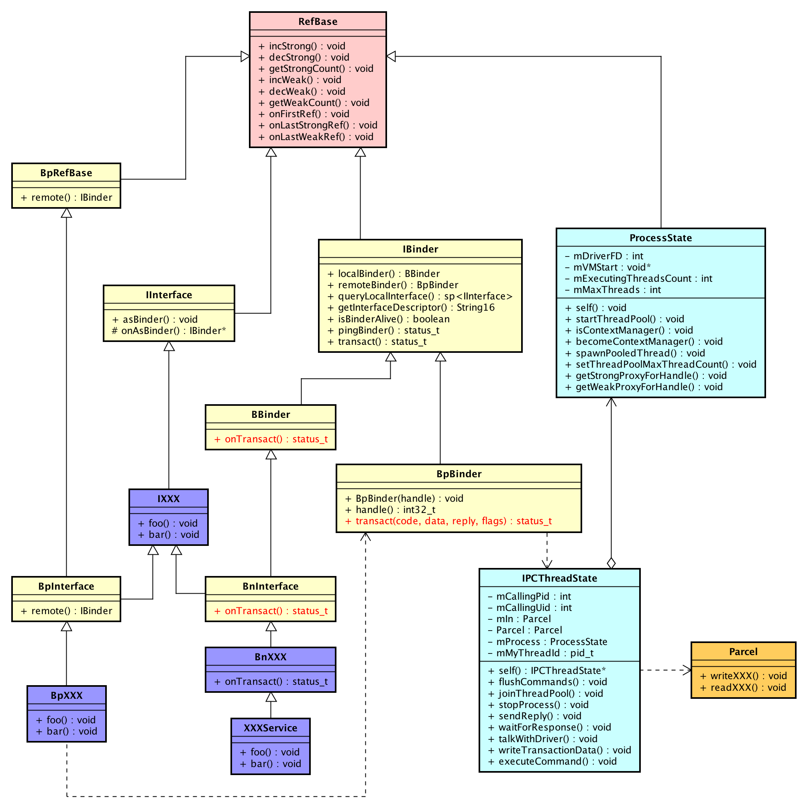
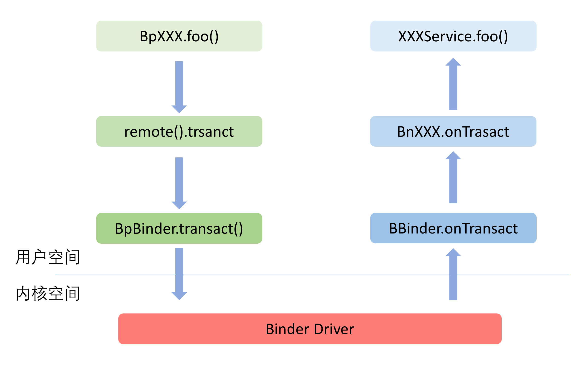

Binder机制03-Framework-Native
前言¶
Framework是一个中间层，它对接了底层实现，封装了复杂的内部逻辑，并提供供外部使用的接口。Framework层是应用程序开发的基础。Binder Framework层分为C++和Java两个部分，为了达到功能的复用，中间通过JNI进行衔接。 Binder Framework的C++部分
- 头文件位于这个路径：http://aospxref.com/android-11.0.0_r21/xref/frameworks/native/libs/binder/include/binder/
- 实现位于这个路径：http://aospxref.com/android-11.0.0_r21/xref/frameworks/native/libs/binder/
Binder库最终会编译成一个动态链接库：libbinder.so，供其他进程链接使用。
在上一章节中，我们了解到了ServiceManager的启动过程，注册、获取服务的细节。如果让我们开发应该Native服务，我们要怎么做呢？我们以media的服务来进行分析。在了解如何开发native服务之前我们先了解Native层的Binder架构。
Native层的Binder架构¶
Binder Framework Native(libbinder)中，将实现分为Proxy和Native两端。
- Proxy对应Client端，是服务对外提供的接口。类名中带有小写字母p的（例如BpInterface），就是指Proxy端。
- Native是服务实现的一端，对应了上文提到的Server端。类名带有小写字母n的（例如BnInterface），就是指Native端。
Proxy代表了调用方，通常与服务的实现不在同一个进程，因此下文中，我们也称Proxy端为“远程”端。 Native端是服务实现的自身，因此下文中，我们也称Native端为“本地”端。
概念¶
在前面的Binder概述、Binder驱动等章节我们都聊到了BpBinder、BBinder。我们先用一个表格来列举libbinder中的主要类。
| 类名 | 说明 |
|---|---|
| BpRefBase | RefBase的子类，提供remote()方法获取远程Binder |
| IInterface | Binder服务接口的基类，Binder服务通常需要同时提供本地接口和远程接口 |
| BpInterface | 远程接口的基类，远程接口是供客户端调用的接口集 |
| BnInterface | 本地接口的基类，本地接口是需要服务中真正实现的接口集 |
| IBiner | Binder对象的基类，BBinder和BpBinder都是这个类的子类 |
| BpBinder | 远程Binder，这个类提供transact方法来发送请求，BpXXX实现中会用到 |
| BBinder | 本地Binder，服务实现方的基类，提供了onTransact接口来接收请求 |
| ProcessState | 代表了使用Binder的进程 |
| IPCThreadState | 代表了使用Binder的线程，这个类中封装了与Binder驱动通信的逻辑 |
| Parcel | 在Binder上传递的数据的包装器 |
下图描述了Binder Framework Native(libbinder)主要类的关系。

Binder服务的实现类（图中紫色部分）通常都会遵守下面的命名规则： - 服务的接口使用I字母作为前缀 - 远程接口使用Bp作为前缀 - 本地接口使用Bn作为前缀
IBinder.h¶
IBinder从Refbase继承而来，一提供强弱指针计数能力。IBinder有几个方法比较重要：
- localBinder()：获取本地Binder对象
- remoteBinder()：获取远程Binder对象
- transact()：进行一次Binder操作
- queryLocalInterface()：尝试获取本地Binder，如何失败返回NULL
- getInterfaceDescriptor()：获取Binder的服务接口描述，其实就是Binder服务的唯一标识
- isBinderAlive()：查询Binder服务是否还活着
- pingBinder()：发送PING_TRANSACTION给Binder服务
IBinder.h的代码可以点链接查看。对于IBinder中的方法，基本都是没有实现的，这些方法的实现都交给继承它的子类来实现，那下面直接看BpBinder的内容。
BpBinder.h¶
BpBinder.h的代码比较多不贴出来了，可以点击链接自行查看代码。我们主要来分析上述提到的几个函数的具体实现。
BpBinder构造函数¶
http://aospxref.com/android-11.0.0_r21/xref/frameworks/native/libs/binder/BpBinder.cpp
BpBinder::BpBinder(int32_t handle, int32_t trackedUid)
: mHandle(handle)
, mStability(0)
, mAlive(1)
, mObitsSent(0)
, mObituaries(nullptr)
, mTrackedUid(trackedUid)
{
ALOGV("Creating BpBinder %p handle %d\n", this, mHandle);
extendObjectLifetime(OBJECT_LIFETIME_WEAK);
IPCThreadState::self()->incWeakHandle(handle, this);
}
- 将传入的handle值保存到mHandle成员变量里
- mAlive设置为1
- extendObjectLifetime将对象改为弱引用控制
- 通过IPCThreadState的incWeakHandle增加Binder Service的如引用计数值。
http://aospxref.com/android-11.0.0_r21/xref/frameworks/native/libs/binder/IPCThreadState.cpp
void IPCThreadState::incWeakHandle(int32_t handle, BpBinder *proxy)
{
LOG_REMOTEREFS("IPCThreadState::incWeakHandle(%d)\n", handle);
mOut.writeInt32(BC_INCREFS);
mOut.writeInt32(handle);
// Create a temp reference until the driver has handled this command.
proxy->getWeakRefs()->incWeak(mProcess.get());
mPostWriteWeakDerefs.push(proxy->getWeakRefs());
}
这一步只是将BC_INCREFS请求写到mOut中，还没有发送出去。
除了incWeakHandle函数外还有decWeakHandle，incStrongHandle和decStrongHandle与Binder协议中的其他命令对应起来。
getInterfaceDescriptor()¶
http://aospxref.com/android-11.0.0_r21/xref/frameworks/native/libs/binder/BpBinder.cpp
const String16& BpBinder::getInterfaceDescriptor() const
{
if (isDescriptorCached() == false) {
Parcel send, reply;
// do the IPC without a lock held.
//通过BpBinder的transact函数将INTERFACE_TRANSACTION请求发送出去
status_t err = const_cast<BpBinder*>(this)->transact(
INTERFACE_TRANSACTION, send, &reply);
if (err == NO_ERROR) {
//读取返回值得内容
String16 res(reply.readString16());
Mutex::Autolock _l(mLock);
// mDescriptorCache could have been assigned while the lock was
// released.
if (mDescriptorCache.size() == 0)
mDescriptorCache = res;
}
}
// we're returning a reference to a non-static object here. Usually this
// is not something smart to do, however, with binder objects it is
// (usually) safe because they are reference-counted.
return mDescriptorCache;
}
这里是通过BpBinder的transact函数将请求发送出去
transact()¶
http://aospxref.com/android-11.0.0_r21/xref/frameworks/native/libs/binder/BpBinder.cpp
// NOLINTNEXTLINE(google-default-arguments)
status_t BpBinder::transact(
uint32_t code, const Parcel& data, Parcel* reply, uint32_t flags)
{
// Once a binder has died, it will never come back to life.
if (mAlive) {
...
//调用IPCThreadState的transact函数
status_t status = IPCThreadState::self()->transact(
mHandle, code, data, reply, flags);
if (status == DEAD_OBJECT) mAlive = 0;
return status;
}
return DEAD_OBJECT;
}
BpBinder这个代理端的数据发送其实也不是自己执行数据传输的操作，而是调用IPCThreadState的transact()函数进行数据传输。
IPCThreadState.transact()¶
http://aospxref.com/android-11.0.0_r21/xref/frameworks/native/libs/binder/IPCThreadState.cpp
status_t IPCThreadState::transact(int32_t handle,
uint32_t code, const Parcel& data,
Parcel* reply, uint32_t flags)
{
status_t err;
flags |= TF_ACCEPT_FDS;
...
//调用writeTransactionData，将data中的数据打包成binder_transaction_data结构并写入到mOut中
err = writeTransactionData(BC_TRANSACTION, flags, handle, code, data, nullptr);
if (err != NO_ERROR) {
if (reply) reply->setError(err);
return (mLastError = err);
}
if ((flags & TF_ONE_WAY) == 0) {
if (UNLIKELY(mCallRestriction != ProcessState::CallRestriction::NONE)) {
if (mCallRestriction == ProcessState::CallRestriction::ERROR_IF_NOT_ONEWAY) {
ALOGE("Process making non-oneway call (code: %u) but is restricted.", code);
CallStack::logStack("non-oneway call", CallStack::getCurrent(10).get(),
ANDROID_LOG_ERROR);
} else /* FATAL_IF_NOT_ONEWAY */ {
LOG_ALWAYS_FATAL("Process may not make oneway calls (code: %u).", code);
}
}
...
if (reply) {
//和Binder驱动通信，等待数据回复
err = waitForResponse(reply);
} else {
Parcel fakeReply;
//和Binder驱动通信，等待数据回复
err = waitForResponse(&fakeReply);
}
...
} else {
//和Binder驱动通信，等待数据回复
err = waitForResponse(nullptr, nullptr);
}
return err;
}
- 调用writeTransactionData，将Parcel类变量data打包成一个binder_transaction_data，然后将其写到mOut中
- 调用waitForResponse，等待binder驱动处理数据
IPCThreadState.waitForResponse()¶
http://aospxref.com/android-11.0.0_r21/xref/frameworks/native/libs/binder/IPCThreadState.cpp
status_t IPCThreadState::waitForResponse(Parcel *reply, status_t *acquireResult)
{
uint32_t cmd;
int32_t err;
while (1) {
//Binder驱动进行交互
if ((err=talkWithDriver()) < NO_ERROR) break;
err = mIn.errorCheck();
if (err < NO_ERROR) break;
if (mIn.dataAvail() == 0) continue;
//拿到cmd
cmd = (uint32_t)mIn.readInt32();
switch (cmd) {
case BR_TRANSACTION_COMPLETE:
if (!reply && !acquireResult) goto finish;
break;
case BR_DEAD_REPLY:
err = DEAD_OBJECT;
goto finish;
case BR_FAILED_REPLY:
err = FAILED_TRANSACTION;
goto finish;
case BR_FROZEN_REPLY:
err = FAILED_TRANSACTION;
goto finish;
case BR_ACQUIRE_RESULT:
{
ALOG_ASSERT(acquireResult != NULL, "Unexpected brACQUIRE_RESULT");
const int32_t result = mIn.readInt32();
if (!acquireResult) continue;
*acquireResult = result ? NO_ERROR : INVALID_OPERATION;
}
goto finish;
case BR_REPLY:
{
binder_transaction_data tr;
err = mIn.read(&tr, sizeof(tr));
ALOG_ASSERT(err == NO_ERROR, "Not enough command data for brREPLY");
if (err != NO_ERROR) goto finish;
if (reply) {
if ((tr.flags & TF_STATUS_CODE) == 0) {
reply->ipcSetDataReference(
reinterpret_cast<const uint8_t*>(tr.data.ptr.buffer),
tr.data_size,
reinterpret_cast<const binder_size_t*>(tr.data.ptr.offsets),
tr.offsets_size/sizeof(binder_size_t),
freeBuffer, this);
} else {
err = *reinterpret_cast<const status_t*>(tr.data.ptr.buffer);
freeBuffer(nullptr,
reinterpret_cast<const uint8_t*>(tr.data.ptr.buffer),
tr.data_size,
reinterpret_cast<const binder_size_t*>(tr.data.ptr.offsets),
tr.offsets_size/sizeof(binder_size_t), this);
}
} else {
freeBuffer(nullptr,
reinterpret_cast<const uint8_t*>(tr.data.ptr.buffer),
tr.data_size,
reinterpret_cast<const binder_size_t*>(tr.data.ptr.offsets),
tr.offsets_size/sizeof(binder_size_t), this);
continue;
}
}
goto finish;
default:
err = executeCommand(cmd);
if (err != NO_ERROR) goto finish;
break;
}
}
finish:
if (err != NO_ERROR) {
if (acquireResult) *acquireResult = err;
if (reply) reply->setError(err);
mLastError = err;
}
return err;
}
- 调用talkWithDriver()函数跟驱动交互，在 Binder机制02-ServiceManager 章节中我们讲过talkWithDriver()函数调用binder_ioctl()跟驱动交互的细节，这里不在展开描述
- 根据binder驱动处理后的结果做操作，BR码在 Binder机制02-ServiceManager 有描述
linkToDeath()¶
http://aospxref.com/android-11.0.0_r21/xref/frameworks/native/libs/binder/BpBinder.cpp
status_t BpBinder::linkToDeath(
const sp<DeathRecipient>& recipient, void* cookie, uint32_t flags)
{
Obituary ob;
ob.recipient = recipient;
ob.cookie = cookie;
ob.flags = flags;
{
AutoMutex _l(mLock);
if (!mObitsSent) {//还没有发送过死亡通知
if (!mObituaries) {//第一次调用的话，mObituaries还没有分配内存
mObituaries = new Vector<Obituary>;
if (!mObituaries) {
return NO_MEMORY;
}
ALOGV("Requesting death notification: %p handle %d\n", this, mHandle);
getWeakRefs()->incWeak(this);
IPCThreadState* self = IPCThreadState::self();
self->requestDeathNotification(mHandle, this);
self->flushCommands();
}
ssize_t res = mObituaries->add(ob);
return res >= (ssize_t)NO_ERROR ? (status_t)NO_ERROR : res;
}
}
return DEAD_OBJECT;
}
- 判断是否已经发送过死亡通知，如果没有发送过那么就分配内存
- 调用IPCThreadState的requestDeathNotification，将自己注册到binder驱动里面
- 将Obituary添加到vector里
IPCThreadState.requestDeathNotification()¶
http://aospxref.com/android-11.0.0_r21/xref/frameworks/native/libs/binder/IPCThreadState.cpp
status_t IPCThreadState::requestDeathNotification(int32_t handle, BpBinder* proxy)
{
mOut.writeInt32(BC_REQUEST_DEATH_NOTIFICATION);
mOut.writeInt32((int32_t)handle);
mOut.writePointer((uintptr_t)proxy);
return NO_ERROR;
}
将BC_REQUEST_DEATH_NOTIFICATION（请求接收死亡通知）写到mOut中。BC码在 Binder机制01-驱动 有描述
IPCThreadState.flushCommands()¶
http://aospxref.com/android-11.0.0_r21/xref/frameworks/native/libs/binder/IPCThreadState.cpp
void IPCThreadState::flushCommands()
{
if (mProcess->mDriverFD < 0)
return;
talkWithDriver(false);
// The flush could have caused post-write refcount decrements to have
// been executed, which in turn could result in BC_RELEASE/BC_DECREFS
// being queued in mOut. So flush again, if we need to.
if (mOut.dataSize() > 0) {
talkWithDriver(false);
}
if (mOut.dataSize() > 0) {
ALOGW("mOut.dataSize() > 0 after flushCommands()");
}
}
调用talkWithDriver和binder驱动进行交互，在 Binder机制02-ServiceManager 章节中我们讲过talkWithDriver()函数调用binder_ioctl()跟驱动交互的细节，这里不在展开描述。
unlinkToDeath()¶
http://aospxref.com/android-11.0.0_r21/xref/frameworks/native/libs/binder/BpBinder.cpp
status_t BpBinder::unlinkToDeath(
const wp<DeathRecipient>& recipient, void* cookie, uint32_t flags,
wp<DeathRecipient>* outRecipient)
{
AutoMutex _l(mLock);
if (mObitsSent) {
return DEAD_OBJECT;
}
const size_t N = mObituaries ? mObituaries->size() : 0;
for (size_t i=0; i<N; i++) {
const Obituary& obit = mObituaries->itemAt(i);
if ((obit.recipient == recipient
|| (recipient == nullptr && obit.cookie == cookie))
&& obit.flags == flags) {
if (outRecipient != nullptr) {
*outRecipient = mObituaries->itemAt(i).recipient;
}
mObituaries->removeAt(i);
if (mObituaries->size() == 0) {
ALOGV("Clearing death notification: %p handle %d\n", this, mHandle);
IPCThreadState* self = IPCThreadState::self();
self->clearDeathNotification(mHandle, this);
self->flushCommands();
delete mObituaries;
mObituaries = nullptr;
}
return NO_ERROR;
}
}
return NAME_NOT_FOUND;
}
unlinkToDeath()函数跟linkToDeath()函数调用流程一直，只不过是BC码变成了BC_CLEAR_DEATH_NOTIFICATION（去除接收死亡通知）。
sendObituary()¶
http://aospxref.com/android-11.0.0_r21/xref/frameworks/native/libs/binder/BpBinder.cpp
void BpBinder::sendObituary()
{
ALOGV("Sending obituary for proxy %p handle %d, mObitsSent=%s\n",
this, mHandle, mObitsSent ? "true" : "false");
mAlive = 0;
//如果已经发送过死亡通知了就直接返回
if (mObitsSent) return;
mLock.lock();
Vector<Obituary>* obits = mObituaries;
if(obits != nullptr) {
ALOGV("Clearing sent death notification: %p handle %d\n", this, mHandle);
IPCThreadState* self = IPCThreadState::self();
//清除注册在binder驱动中的死亡通知
self->clearDeathNotification(mHandle, this);
self->flushCommands();
mObituaries = nullptr;
}
mObitsSent = 1;
mLock.unlock();
ALOGV("Reporting death of proxy %p for %zu recipients\n",
this, obits ? obits->size() : 0U);
if (obits != nullptr) {
const size_t N = obits->size();
for (size_t i=0; i<N; i++) {
//调用死亡通知函数
reportOneDeath(obits->itemAt(i));
}
delete obits;
}
}
void BpBinder::reportOneDeath(const Obituary& obit)
{
sp<DeathRecipient> recipient = obit.recipient.promote();
ALOGV("Reporting death to recipient: %p\n", recipient.get());
if (recipient == nullptr) return;
recipient->binderDied(this);
}
发出死亡通知。
BBinder¶
http://aospxref.com/android-11.0.0_r21/xref/frameworks/native/libs/binder/include/binder/Binder.h
class BBinder : public IBinder
{
public:
BBinder();
virtual const String16& getInterfaceDescriptor() const;
virtual bool isBinderAlive() const;
virtual status_t pingBinder();
virtual status_t dump(int fd, const Vector<String16>& args);
// NOLINTNEXTLINE(google-default-arguments)
virtual status_t transact( uint32_t code,
const Parcel& data,
Parcel* reply,
uint32_t flags = 0) final;
// NOLINTNEXTLINE(google-default-arguments)
virtual status_t linkToDeath(const sp<DeathRecipient>& recipient,
void* cookie = nullptr,
uint32_t flags = 0);
// NOLINTNEXTLINE(google-default-arguments)
virtual status_t unlinkToDeath( const wp<DeathRecipient>& recipient,
void* cookie = nullptr,
uint32_t flags = 0,
wp<DeathRecipient>* outRecipient = nullptr);
virtual void attachObject( const void* objectID,
void* object,
void* cleanupCookie,
object_cleanup_func func) final;
virtual void* findObject(const void* objectID) const final;
virtual void detachObject(const void* objectID) final;
virtual BBinder* localBinder();
bool isRequestingSid();
// This must be called before the object is sent to another process. Not thread safe.
void setRequestingSid(bool requestSid);
sp<IBinder> getExtension();
// This must be called before the object is sent to another process. Not thread safe.
void setExtension(const sp<IBinder>& extension);
__attribute__((weak))
void setMinSchedulerPolicy(int policy, int priority);
__attribute__((weak))
int getMinSchedulerPolicy();
__attribute__((weak))
int getMinSchedulerPriority();
pid_t getDebugPid();
protected:
virtual ~BBinder();
// NOLINTNEXTLINE(google-default-arguments)
virtual status_t onTransact( uint32_t code,
const Parcel& data,
Parcel* reply,
uint32_t flags = 0);
private:
BBinder(const BBinder& o);
BBinder& operator=(const BBinder& o);
class Extras;
Extras* getOrCreateExtras();
std::atomic<Extras*> mExtras;
friend ::android::internal::Stability;
union {
int32_t mStability;
void* mReserved0;
};
};
BBinder类在Binder.h中定义，其方法在Binder.cpp里实现。
transact()¶
https://aospxref.com/android-11.0.0_r21/xref/frameworks/native/libs/binder/Binder.cpp
// NOLINTNEXTLINE(google-default-arguments)
status_t BBinder::transact(
uint32_t code, const Parcel& data, Parcel* reply, uint32_t flags)
{
data.setDataPosition(0);
status_t err = NO_ERROR;
switch (code) {
case PING_TRANSACTION:
err = pingBinder();
break;
case EXTENSION_TRANSACTION:
err = reply->writeStrongBinder(getExtension());
break;
case DEBUG_PID_TRANSACTION:
err = reply->writeInt32(getDebugPid());
break;
default:
err = onTransact(code, data, reply, flags);
break;
}
// In case this is being transacted on in the same process.
if (reply != nullptr) {
reply->setDataPosition(0);
}
return err;
}
那么接下来直接看onTransact函数好了。
https://aospxref.com/android-11.0.0_r21/xref/frameworks/native/libs/binder/Binder.cpp
// NOLINTNEXTLINE(google-default-arguments)
status_t BBinder::onTransact(
uint32_t code, const Parcel& data, Parcel* reply, uint32_t /*flags*/)
{
switch (code) {
case INTERFACE_TRANSACTION:
reply->writeString16(getInterfaceDescriptor());
return NO_ERROR;
case DUMP_TRANSACTION: {
int fd = data.readFileDescriptor();
int argc = data.readInt32();
Vector<String16> args;
for (int i = 0; i < argc && data.dataAvail() > 0; i++) {
args.add(data.readString16());
}
return dump(fd, args);
}
case SHELL_COMMAND_TRANSACTION: {
int in = data.readFileDescriptor();
int out = data.readFileDescriptor();
int err = data.readFileDescriptor();
int argc = data.readInt32();
Vector<String16> args;
for (int i = 0; i < argc && data.dataAvail() > 0; i++) {
args.add(data.readString16());
}
sp<IShellCallback> shellCallback = IShellCallback::asInterface(
data.readStrongBinder());
sp<IResultReceiver> resultReceiver = IResultReceiver::asInterface(
data.readStrongBinder());
// XXX can't add virtuals until binaries are updated.
//return shellCommand(in, out, err, args, resultReceiver);
(void)in;
(void)out;
(void)err;
if (resultReceiver != nullptr) {
resultReceiver->send(INVALID_OPERATION);
}
return NO_ERROR;
}
case SYSPROPS_TRANSACTION: {
report_sysprop_change();
return NO_ERROR;
}
default:
return UNKNOWN_TRANSACTION;
}
}
没有什么实际的内容，在 Binder机制02-ServiceManager 章节中提到过编写实际的Binder服务端程序的时候应该是会重载这个函数，以提供实际的功能。事实是否如此呢，我们可以带着这个疑问在下文中寻找答案。
BBinder的代码不多，看样子主要还是依靠具体服务端的特性来添加相应的功能的。 还有就是像attachObject、detachObject、findObject的功能是通过BpBinder中的ObjectManager来实现的。
IInterface.h¶
IInterface.h的代码比较多，可以通过点链接自行查看。除了构造函数和析构函数外，IInterface类里面只带有一个实现了的类方法，两个不同的重载，就是将IInterface参数转换成IBinder对象，然后返回给调用者，这样子调用者就可以使用IBinder提供的transact、onTransact等函数进行Binder数据传输了。
DECLARE_META_INTERFACE¶
http://aospxref.com/android-11.0.0_r21/xref/frameworks/native/libs/binder/include/binder/IInterface.h
#define DECLARE_META_INTERFACE(INTERFACE) \
public: \
static const ::android::String16 descriptor; \
static ::android::sp<I##INTERFACE> asInterface( \
const ::android::sp<::android::IBinder>& obj); \
virtual const ::android::String16& getInterfaceDescriptor() const; \
I##INTERFACE(); \
virtual ~I##INTERFACE(); \
static bool setDefaultImpl(std::unique_ptr<I##INTERFACE> impl); \
static const std::unique_ptr<I##INTERFACE>& getDefaultImpl(); \
private: \
static std::unique_ptr<I##INTERFACE> default_impl; \
public:
以AudioPolicyService为例
DECLARE_META_INTERFACE(AudioPolicyService)¶
public:
static const ::android::String16 descriptor;
static ::android::sp<IAudioPolicyService> asInterface(
const ::android::sp<::android::IBinder>& obj);
virtual const ::android::String16& getInterfaceDescriptor() const;
IAudioPolicyService();
virtual ~IAudioPolicyService();
static bool setDefaultImpl(std::unique_ptr<IAudioPolicyService> impl);
static const std::unique_ptr<IAudioPolicyService>& getDefaultImpl();
private:
static std::unique_ptr<IAudioPolicyService> default_impl;
public:
替换之后的内容就很容易理解了，无非就是定义了一些方法。那么IMPLEMENT_META_INTERFACE应该就是实现这些方法的宏了，下面看看替换后的IMPLEMENT_META_INTERFACE的内容是什么。
IMPLEMENT_META_INTERFACE¶
http://aospxref.com/android-11.0.0_r21/xref/frameworks/native/libs/binder/include/binder/IInterface.h
#define IMPLEMENT_META_INTERFACE(INTERFACE, NAME) \
DO_NOT_DIRECTLY_USE_ME_IMPLEMENT_META_INTERFACE(INTERFACE, NAME) \
#endif
#define DO_NOT_DIRECTLY_USE_ME_IMPLEMENT_META_INTERFACE(INTERFACE, NAME)\
const ::android::StaticString16 \
I##INTERFACE##_descriptor_static_str16(__IINTF_CONCAT(u, NAME));\
const ::android::String16 I##INTERFACE::descriptor( \
I##INTERFACE##_descriptor_static_str16); \
const ::android::String16& \
I##INTERFACE::getInterfaceDescriptor() const { \
return I##INTERFACE::descriptor; \
} \
::android::sp<I##INTERFACE> I##INTERFACE::asInterface( \
const ::android::sp<::android::IBinder>& obj) \
{ \
::android::sp<I##INTERFACE> intr; \
if (obj != nullptr) { \
intr = static_cast<I##INTERFACE*>( \
obj->queryLocalInterface( \
I##INTERFACE::descriptor).get()); \
if (intr == nullptr) { \
intr = new Bp##INTERFACE(obj); \
} \
} \
return intr; \
} \
std::unique_ptr<I##INTERFACE> I##INTERFACE::default_impl; \
bool I##INTERFACE::setDefaultImpl(std::unique_ptr<I##INTERFACE> impl)\
{ \
/* Only one user of this interface can use this function */ \
/* at a time. This is a heuristic to detect if two different */ \
/* users in the same process use this function. */ \
assert(!I##INTERFACE::default_impl); \
if (impl) { \
I##INTERFACE::default_impl = std::move(impl); \
return true; \
} \
return false; \
} \
const std::unique_ptr<I##INTERFACE>& I##INTERFACE::getDefaultImpl() \
{ \
return I##INTERFACE::default_impl; \
} \
I##INTERFACE::I##INTERFACE() { } \
I##INTERFACE::~I##INTERFACE() { } \
以AudioPolicyService为例
IMPLEMENT_META_INTERFACE(AudioPolicyService, "android.media.IAudioPolicyService")¶
const ::android::String16 IAudioPolicyService::descriptor("android.media.IAudioPolicyService");
const ::android::String16&
IAudioPolicyService::getInterfaceDescriptor() const {
return IAudioPolicyService::descriptor;
}
::android::sp<IAudioPolicyService> IAudioPolicyService::asInterface(
const ::android::sp<::android::IBinder>& obj)
{
::android::sp<IAudioPolicyService> intr;
if (obj != nullptr) {
intr = static_cast<IAudioPolicyService*>(
obj->queryLocalInterface(
IAudioPolicyService::descriptor).get());
if (intr == nullptr) {
intr = new BpAudioPolicyService(obj);
}
}
return intr;
}
std::unique_ptr<IAudioPolicyService> IAudioPolicyService::default_impl;
bool IAudioPolicyService::setDefaultImpl(std::unique_ptr<IAudioPolicyService> impl)
{
if (!IAudioPolicyService::default_impl && impl) {
IAudioPolicyService::default_impl = std::move(impl);
return true;
}
return false;
}
const std::unique_ptr<IAudioPolicyService>& IAudioPolicyService::getDefaultImpl()
{
return IAudioPolicyService::default_impl;
}
IAudioPolicyService::IAudioPolicyService() { }
IAudioPolicyService::~IAudioPolicyService() { }
其实将descriptor定义为android.os.IAudioPolicyService，然后getInterfaceDescriptor函数可以获取到这个descriptor。然后在asInterface函数中，将一个IBinder对象转换为一个BpInterface类对象。下一节还有举例补充说明。
小结¶
每个Binder服务都是为了某个功能而实现的，因此其本身会定义一套接口集（通常是C++的一个类）来描述自己提供的所有功能。而Binder服务既有自身实现服务的类，也要有给客户端进程调用的类。为了便于开发，这两中类里面的服务接口应当是一致的，例如：假设服务实现方提供了一个接口为add(int a, int b)的服务方法，那么其远程接口中也应当有一个add(int a, int b)方法。因此为了实现方便，本地实现类和远程接口类需要有一个公共的描述服务接口的基类（即上图中的IXXXService）来继承。而这个基类通常是IInterface的子类。
BnInterface继承了BBinder类，由此可以通过复写onTransact方法来提供实现。BpInterface继承了BpRefBase，通过这个类的remote方法可以获取到指向服务实现方的句柄。在客户端接口的实现类中，每个接口在组装好参数之后，都会调用remote()->transact来发送请求，而这里其实就是调用的BpBinder的transact方法，这样请求便通过Binder到达了服务实现方的onTransact中。这个过程如下图所示：

注册Native服务（media服务）¶
mediaserver服务如何被拉起，后面会专门找个章节详细讲解，本章我们就默认执行到mediaserver的main()函数了。
http://aospxref.com/android-11.0.0_r21/xref/frameworks/av/media/mediaserver/main_mediaserver.cpp
int main(int argc __unused, char **argv __unused)
{
signal(SIGPIPE, SIG_IGN);
sp<ProcessState> proc(ProcessState::self());//获得ProcessState实例对象
sp<IServiceManager> sm(defaultServiceManager());//获取BpServiceManager对象
ALOGI("ServiceManager: %p", sm.get());
AIcu_initializeIcuOrDie();
MediaPlayerService::instantiate();//注册多媒体服务
ResourceManagerService::instantiate();
registerExtensions();
::android::hardware::configureRpcThreadpool(16, false);//配置HwBinder的线程池
ProcessState::self()->startThreadPool();//启动Binder线程池
IPCThreadState::self()->joinThreadPool();//当前线程加入到线程池
::android::hardware::joinRpcThreadpool();//把当前的通信加入HwBinder的线程池进行循环
}
- 获得ProcessState实例对象
- 调用defualtServiceManager方法获取IServiceManager实例（即BpServiceManager）
- 注册media服务
- 启动Binder线程池
- 把当前线程加入到线程池
打开Binder驱动¶
http://aospxref.com/android-11.0.0_r21/xref/frameworks/native/libs/binder/ProcessState.cpp
sp<ProcessState> ProcessState::self()
{
Mutex::Autolock _l(gProcessMutex);
if (gProcess != nullptr) {
return gProcess;
}
gProcess = new ProcessState(kDefaultDriver);
return gProcess;
}
ProcessState代表进程状态，一个进程只有一个ProcessState对象。ProcessState采用了单例的模式保存了一个ProcessState全局对象gProcess，供每个线程使用。
这里的new ProcessState(kDefaultDriver)其实就是去打开binder驱动等操作，如果看过 Binder机制02-ServiceManager 或者Ashmem简介（Android IPC传输大数据）会这流程有所了解，为了照顾没看过这两篇文档的同学，这里我们还是把之前的分析拷贝过来。
new ProcessState(driver)¶
http://aospxref.com/android-11.0.0_r21/xref/frameworks/native/libs/binder/ProcessState.cpp
ProcessState::ProcessState(const char *driver)
: mDriverName(String8(driver))
, mDriverFD(open_driver(driver))
, mVMStart(MAP_FAILED)
, mThreadCountLock(PTHREAD_MUTEX_INITIALIZER)
, mThreadCountDecrement(PTHREAD_COND_INITIALIZER)
, mExecutingThreadsCount(0)
, mMaxThreads(DEFAULT_MAX_BINDER_THREADS)
, mStarvationStartTimeMs(0)
, mThreadPoolStarted(false)
, mThreadPoolSeq(1)
, mCallRestriction(CallRestriction::NONE)
{
...
if (mDriverFD >= 0) {
// mmap the binder, providing a chunk of virtual address space to receive transactions.
//#define BINDER_VM_SIZE ((1 * 1024 * 1024) - sysconf(_SC_PAGE_SIZE) * 2)
//_SC_PAGE_SIZE表示一个page页的大小，通常情况下为4K
//3. 通过mmap内存映射（1M-4K*2）的内存空间
mVMStart = mmap(nullptr, BINDER_VM_SIZE, PROT_READ, MAP_PRIVATE | MAP_NORESERVE, mDriverFD, 0);
if (mVMStart == MAP_FAILED) {
// *sigh*
ALOGE("Using %s failed: unable to mmap transaction memory.\n", mDriverName.c_str());
close(mDriverFD);
mDriverFD = -1;
mDriverName.clear();
}
}
...
}
这里看到了很多有用的信息，设置驱动的名字、最大线程数等等。还调用了open_driver(driver)和mmap(nullptr, BINDER_VM_SIZE, PROT_READ, MAP_PRIVATE | MAP_NORESERVE, mDriverFD, 0)。
open_driver(driver)¶
http://aospxref.com/android-11.0.0_r21/xref/frameworks/native/libs/binder/ProcessState.cpp
static int open_driver(const char *driver)
{
//1. 打开Binder设备驱动
int fd = open(driver, O_RDWR | O_CLOEXEC);
if (fd >= 0) {
int vers = 0;
//2. 获取Binder的版本信息
status_t result = ioctl(fd, BINDER_VERSION, &vers);
if (result == -1) {
ALOGE("Binder ioctl to obtain version failed: %s", strerror(errno));
close(fd);
fd = -1;
}
//2.1 比较协议版本是否相同，不同则跳出
if (result != 0 || vers != BINDER_CURRENT_PROTOCOL_VERSION) {
ALOGE("Binder driver protocol(%d) does not match user space protocol(%d)! ioctl() return value: %d",
vers, BINDER_CURRENT_PROTOCOL_VERSION, result);
close(fd);
fd = -1;
}
size_t maxThreads = DEFAULT_MAX_BINDER_THREADS;
//设置最大线程数，BINDER_SET_MAX_THREADS=16
result = ioctl(fd, BINDER_SET_MAX_THREADS, &maxThreads);
if (result == -1) {
ALOGE("Binder ioctl to set max threads failed: %s", strerror(errno));
}
} else {
ALOGW("Opening '%s' failed: %s\n", driver, strerror(errno));
}
return fd;
}
- 调用open（对应内核中的binder_open）打开Binder设备驱动
- 调用ioctl（对应内核中的binder_ioctl）获取Binder的版本信息
- 调用ioctl（对应内核中的binder_ioctl）设置最大线程数，BINDER_SET_MAX_THREADS=16
mmap()¶
http://aospxref.com/android-11.0.0_r21/xref/frameworks/native/libs/binder/ProcessState.cpp
//#define BINDER_VM_SIZE ((1 * 1024 * 1024) - sysconf(_SC_PAGE_SIZE) * 2)
//_SC_PAGE_SIZE表示一个page页的大小，通常情况下为4K
//3. 通过mmap内存映射（1M-4K*2）的内存空间
mVMStart = mmap(nullptr, BINDER_VM_SIZE, PROT_READ, MAP_PRIVATE | MAP_NORESERVE, mDriverFD, 0);
调用mmap（对应内核中的binder_mmap）内存映射（1M-4K*2）的内存空间
小结¶
sequenceDiagram
main_mediaserver.cpp ->>+ ProcessState:self()
ProcessState ->> ProcessState:new ProcessState(driver)
ProcessState ->> ProcessState:open_driver(driver)
ProcessState ->> Binder驱动:binder_open()
ProcessState ->> Binder驱动:binder_ioctl()
ProcessState ->>- Binder驱动:binder_mmap()ProcessState:self的工作也比较简单，分为以下几步：
- 通过系统调用open()来打开"/dev/binder"，获得一个句柄信息，在Binder驱动中对应的是函数binder_open()
- 通过ioctl获取binder的版本信息，比较binder协议版本是否相同，不同则跳出；再次通过ioctl设置最大线程数，在Binder驱动中对应的是函数binder_ioctl()
- 通过mmap内存映射（1M-4K*2）的内存空间，即把binder驱动文件的1016K字节映射到了内存空间，这1016K内存空间为servicemanager使用。在Binder驱动中对应的是函数binder_mmap()。
- _SC_PAGE_SIZE表示一个page页的大小，通常情况下为4K，即(1M - 4K*2)=1016K。
- 这个page的大小，不同厂家有时候也会调整大小，一般有1M，64K，4K，1KB，通常为4K。
- Android11之前servicemanager映射的内存空间是128K。
获取ServiceManager代理对象¶
当服务进程获取到了ProcessState对象后，接下来要拿到ServiceManager的代理对象(BpServiceManager)。
http://aospxref.com/android-11.0.0_r21/xref/frameworks/native/libs/binder/IServiceManager.cpp
//AidlServiceManager其实就是IServiceManager
using AidlServiceManager = android::os::IServiceManager;
sp<IServiceManager> defaultServiceManager()
{
std::call_once(gSmOnce, []() {
sp<AidlServiceManager> sm = nullptr;
while (sm == nullptr) {
sm = interface_cast<AidlServiceManager>(ProcessState::self()->getContextObject(nullptr));
if (sm == nullptr) {
ALOGE("Waiting 1s on context object on %s.", ProcessState::self()->getDriverName().c_str());
sleep(1);
}
}
gDefaultServiceManager = new ServiceManagerShim(sm);
});
return gDefaultServiceManager;
}
获取ServiceManager对象采用单例模式，当gDefaultServiceManager存在，则直接返回，否则创建一个新对象。 其创建过程分为几个步骤：
- 调用ProcessState::self()获取ProcessState对象，上一步刚获取，所以全局对象gProcess
- 调用ProcessState::getContextObject(nullptr)获取获取BpBinder对象
- 调用interface_cast()获取BpServiceManager对象
getContextObject()¶
http://aospxref.com/android-11.0.0_r21/xref/frameworks/native/libs/binder/ProcessState.cpp
sp<IBinder> ProcessState::getContextObject(const sp<IBinder>& /*caller*/)
{
sp<IBinder> context = getStrongProxyForHandle(0);
if (context == nullptr) {
ALOGW("Not able to get context object on %s.", mDriverName.c_str());
}
// The root object is special since we get it directly from the driver, it is never
// written by Parcell::writeStrongBinder.
internal::Stability::tryMarkCompilationUnit(context.get());
return context;
}
getContextObject()调用getStrongProxyForHandle()进行处理，传入handle=0(系统中约定了ServiceManager的handle=0)
getStrongProxyForHandle()¶
http://aospxref.com/android-11.0.0_r21/xref/frameworks/native/libs/binder/ProcessState.cpp
sp<IBinder> ProcessState::getStrongProxyForHandle(int32_t handle)
{
sp<IBinder> result;
AutoMutex _l(mLock);
//查找handle对应的资源项
handle_entry* e = lookupHandleLocked(handle);
if (e != nullptr) {
IBinder* b = e->binder;
if (b == nullptr || !e->refs->attemptIncWeak(this)) {
if (handle == 0) {
Parcel data;
//通过ping操作测试binder是否已经准备就绪
status_t status = IPCThreadState::self()->transact(
0, IBinder::PING_TRANSACTION, data, nullptr, 0);
if (status == DEAD_OBJECT)
return nullptr;
}
//当handle值所对应的IBinder不存在或弱引用无效时，则创建BpBinder对象
//handle=0
//create的实现其实就是new BpBinder(0,trackedUid)
b = BpBinder::create(handle);
e->binder = b;
if (b) e->refs = b->getWeakRefs();
result = b;
} else {
// This little bit of nastyness is to allow us to add a primary
// reference to the remote proxy when this team doesn't have one
// but another team is sending the handle to us.
result.force_set(b);
e->refs->decWeak(this);
}
}
return result;
}
ProcessState::handle_entry* ProcessState::lookupHandleLocked(int32_t handle)
{
const size_t N=mHandleToObject.size();
//当handle大于mHandleToObject的长度时，进入该分支
if (N <= (size_t)handle) {
handle_entry e;
e.binder = nullptr;
e.refs = nullptr;
//从mHandleToObject的第N个位置开始，插入(handle+1-N)个e到队列中
status_t err = mHandleToObject.insertAt(e, N, handle+1-N);
if (err < NO_ERROR) return nullptr;
}
return &mHandleToObject.editItemAt(handle);
}
- 当handle=0所对应的IBinder不存在或弱引用无效时，创建BpBinder
- 通过PING_TRANSACTION来判断ServiceManager是否已经就绪
- 创建一个BpBinder(0, trackedUid)，同时将handle相对应Binder的弱引用增加1
lookupHandleLocked()方法根据handle值来查找对应的handle_entry，handle_entry是一个结构体，里面记录了IBinder和weakref_type两个指针。当handle大于mHandleToObject的Vector长度时，则向Vector中添加(handle+1-N)个handle_entry结构体，然后再返回handle向对应位置的handle_entry结构体指针。
获取BpServiceManager对象¶
interface_cast()¶
http://aospxref.com/android-11.0.0_r21/xref/frameworks/native/libs/binder/include/binder/IInterface.h
template<typename INTERFACE>
inline sp<INTERFACE> interface_cast(const sp<IBinder>& obj)
{
return INTERFACE::asInterface(obj);
}
这里采用了C++的模板函数，因为AidlServiceManager其实就是IServiceManager，interface_cast<AidlServiceManager>其实就是interface_cast<IServiceManager>，也就是调用了IServiceManager::asInterface(obj); 这里的obj就是new BpBinder(0)。
obsidian正文中用到 <> 或者在table中用到 __ 开头，就影响的md格式。 所以上面这段话如果放在正文，就影响了整个文档格式。
IServiceManager::asInterface()¶
但是IServiceManager中没有看到 asInterface()的实现，还记得前面我聊到DECLARE_META_INTERFACE和IMPLEMENT_META_INTERFACE中实现asInterface()。
看过Android 10及之前相关源码的同学应该会对BpServiceManager这个类比较熟悉，它是ServiceManager在其它Binder线程的代理。不过这一部分代码现在已经被删除了。在此之后，BpServiceManager不再通过手动实现，而是采用AID（文件为 IServiceManager.aidl），生成IServiceManager、BnServiceManager、BpServiceManager的头文件及具体实现。
https://android-review.googlesource.com/c/platform/frameworks/native/+/1132445 https://android.googlesource.com/platform/system/tools/aidl/+/brillo-m10-dev/docs/aidl-cpp.md
生成的代码如下：
DECLARE_META_INTERFACE(ServiceManager)
IMPLEMENT_META_INTERFACE(ServiceManager, "android.os.IServiceManager")
DECLARE_META_INTERFACE(ServiceManager)¶
public:
static const ::android::String16 descriptor;
static ::android::sp<IServiceManager> asInterface(
const ::android::sp<::android::IBinder>& obj);
virtual const ::android::String16& getInterfaceDescriptor() const;
IServiceManager();
virtual ~IServiceManager();
static bool setDefaultImpl(std::unique_ptr<IServiceManager> impl);
static const std::unique_ptr<IServiceManager>& getDefaultImpl();
private:
static std::unique_ptr<IServiceManager> default_impl;
public:
该过程主要是声明asInterface()、getInterfaceDescriptor()方法。
IMPLEMENT_META_INTERFACE(ServiceManager, "android.os.IServiceManager")¶
const ::android::String16 IServiceManager::descriptor("android.os.IServiceManager");
const ::android::String16&
IServiceManager::getInterfaceDescriptor() const {
return IServiceManager::descriptor;
}
::android::sp<IServiceManager> IServiceManager::asInterface(
const ::android::sp<::android::IBinder>& obj)
{
::android::sp<IServiceManager> intr;
if (obj != nullptr) {
intr = static_cast<IServiceManager*>(
obj->queryLocalInterface(
IServiceManager::descriptor).get());
if (intr == nullptr) {
intr = new BpServiceManager(obj);
}
}
return intr;
}
std::unique_ptr<IServiceManager> IServiceManager::default_impl;
bool IServiceManager::setDefaultImpl(std::unique_ptr<IServiceManager> impl)
{
if (!IServiceManager::default_impl && impl) {
IServiceManager::default_impl = std::move(impl);
return true;
}
return false;
}
const std::unique_ptr<IServiceManager>& IServiceManager::getDefaultImpl()
{
return IServiceManager::default_impl;
}
IServiceManager::IServiceManager() { }
IServiceManager::~IServiceManager() { }
最终IServiceManager::asInterface()等价于new Bp##INTERFACE(obj)，即new BpServiceManager(obj)，所以gDefaultServiceManager = new ServiceManagerShim(sm);转换后，变成gDefaultServiceManager = new ServiceManagerShim(new BpBinder(0，trackedUid));
MediaPlayerService::instantiate()¶
http://aospxref.com/android-11.0.0_r21/xref/frameworks/av/media/libmediaplayerservice/MediaPlayerService.cpp
void MediaPlayerService::instantiate() {
defaultServiceManager()->addService(
String16("media.player"), new MediaPlayerService());
}
- 创建一个新的Service——BnMediaPlayerService，想把它告诉ServiceManager。然后调用BnServiceManager的addService的addService来向ServiceManager中添加一个Service，其他进程可以通过字符串"media.player"来向ServiceManager查询此服务。
- 注册服务MediaPlayerService：由defaultServiceManager()返回的是BpServiceManager，同时会创建ProcessState对象和BpBinder对象。故此处等价于调用BpServiceManager->addService。
类图¶
懒得画图，复用之前的图片，把图中XXX换成MediaPlayerService即可。
MediaPlayerService继承自BnMediaPlayerService，BnMediaPlayerService继承自BnInterface，BnInterface继承自BBinder，最终转换为一个Binder实体，也就是BBinder对象。
BpServiceManager.addService()¶
http://aospxref.com/android-11.0.0_r21/xref/frameworks/native/libs/binder/IServiceManager.cpp
status_t ServiceManagerShim::addService(const String16& name, const sp<IBinder>& service,
bool allowIsolated, int dumpsysPriority)
{
Status status = mTheRealServiceManager->addService(
String8(name).c_str(), service, allowIsolated, dumpsysPriority);
return status.exceptionCode();
}
添加Service到ServiceManager。
ServiceManager.addService()¶
http://aospxref.com/android-11.0.0_r21/xref/frameworks/native/cmds/servicemanager/ServiceManager.h
//定义Service结构体
struct Service {
sp<IBinder> binder; // not null
bool allowIsolated;
int32_t dumpPriority;
bool hasClients = false; // notifications sent on true -> false.
bool guaranteeClient = false; // forces the client check to true
pid_t debugPid = 0; // the process in which this service runs
// the number of clients of the service, including servicemanager itself
ssize_t getNodeStrongRefCount();
};
using ServiceMap = std::map<std::string, Service>;
//用于保存添加进来的Services
ServiceMap mNameToService;
http://aospxref.com/android-11.0.0_r21/xref/frameworks/native/cmds/servicemanager/ServiceManager.cpp
Status ServiceManager::addService(const std::string& name, const sp<IBinder>& binder, bool allowIsolated, int32_t dumpPriority) {
...
//添加 Service 到 mNameToService 中，完成 Binder Service 注册过程
mNameToService[name] = Service {
.binder = binder,
.allowIsolated = allowIsolated,
.dumpPriority = dumpPriority,
.debugPid = ctx.debugPid,
};
auto it = mNameToRegistrationCallback.find(name);
if (it != mNameToRegistrationCallback.end()) {
for (const sp<IServiceCallback>& cb : it->second) {
mNameToService[name].guaranteeClient = true;
// permission checked in registerForNotifications
cb->onRegistration(name, binder);
}
}
return Status::ok();
}
这一个过程在 Binder机制02-ServiceManager 章节中有讲解，这里就不展开描述。
小结¶
- 服务进程先获得一个 ProcessState()的对象
- 获取ServiceManager的代理对象BpServiceManager，主要通过new BpBinder(0，xxx)得到
- 调用BpServiceManager的addService，ServiceManager保存到mNameToService中
- 通过ProcessState::startThreadPool启动线程池
- 通过IPCThreadState::joinThreadPool将主线程加入的Binder中
- 通过::android::hardware::joinRpcThreadpool()将主线程加入HwBinder的线程池进行循环
获取Native服务（media服务）¶
http://aospxref.com/android-11.0.0_r21/xref/frameworks/av/media/libmedia/IMediaDeathNotifier.cpp
IMediaDeathNotifier::getMediaPlayerService()
{
ALOGV("getMediaPlayerService");
Mutex::Autolock _l(sServiceLock);
if (sMediaPlayerService == 0) {
//获取ServiceManager的代理对象BpServiceManager
sp<IServiceManager> sm = defaultServiceManager();
sp<IBinder> binder;
do {
//调用BpServiceManager的getService接口，来获取服务名称为“media.player”的Binder服务对象
binder = sm->getService(String16("media.player"));
if (binder != 0) {
break;
}
ALOGW("Media player service not published, waiting...");
//如果media的服务还没有准备好，休眠0.5秒进行等待
usleep(500000); // 0.5 s
} while (true);
if (sDeathNotifier == NULL) {
//创建死亡通知对象
sDeathNotifier = new DeathNotifier();
}
binder->linkToDeath(sDeathNotifier);
//转换得到服务对象
sMediaPlayerService = interface_cast<IMediaPlayerService>(binder);
}
ALOGE_IF(sMediaPlayerService == 0, "no media player service!?");
return sMediaPlayerService;
}
- 获取ServiceManager的代理对象BpServiceManager
- 调用BpServiceManager的getService接口，来获取服务名称为“media.player”的Binder服务对象
- 创建死亡通知对象
- 将死亡通知连接到binder
- 得到服务对象
获取ServiceManager代理对象¶
其中defaultServiceManager()过程在上面已经说了。
BpServiceManager.getService()¶
http://aospxref.com/android-11.0.0_r21/xref/frameworks/native/libs/binder/IServiceManager.cpp
sp<IBinder> ServiceManagerShim::getService(const String16& name) const
{
static bool gSystemBootCompleted = false;
//检查指定服务是否存在
sp<IBinder> svc = checkService(name);
if (svc != nullptr) return svc;
//如果ProcessState和Binder驱动交互的是"/dev/vndbinder"，那么isVendorService为True，表明Vendor进程之间可以进行Binder通信
const bool isVendorService =
strcmp(ProcessState::self()->getDriverName().c_str(), "/dev/vndbinder") == 0;
const long timeout = uptimeMillis() + 5000;
// Vendor code can't access system properties
if (!gSystemBootCompleted && !isVendorService) {
//vendor分区的代码不能访问system的属性
#ifdef __ANDROID__
char bootCompleted[PROPERTY_VALUE_MAX];
property_get("sys.boot_completed", bootCompleted, "0");
gSystemBootCompleted = strcmp(bootCompleted, "1") == 0 ? true : false;
#else
gSystemBootCompleted = true;
#endif
}
// retry interval in millisecond; note that vendor services stay at 100ms
//vendor分区的服务sleepTime 为100ms， system为1000ms
const long sleepTime = gSystemBootCompleted ? 1000 : 100;
int n = 0;
while (uptimeMillis() < timeout) {
n++;
ALOGI("Waiting for service '%s' on '%s'...", String8(name).string(),
ProcessState::self()->getDriverName().c_str());
usleep(1000*sleepTime);
sp<IBinder> svc = checkService(name);
if (svc != nullptr) return svc;
}
ALOGW("Service %s didn't start. Returning NULL", String8(name).string());
return nullptr;
}
getService()的核心就是调用checkService()来检查服务是否存在，如果不存在，继续等待查找。注意：vendor分区的服务等待时间为100ms，system分区的为1000ms.
BpServiceManager.checkService()¶
http://aospxref.com/android-11.0.0_r21/xref/frameworks/native/libs/binder/IServiceManager.cpp
sp<IBinder> ServiceManagerShim::checkService(const String16& name) const
{
sp<IBinder> ret;
if (!mTheRealServiceManager->checkService(String8(name).c_str(), &ret).isOk()) {
return nullptr;
}
return ret;
}
checkService()和前面的addService()类似，最终调到ServiceManager.cpp里。
ServiceManager.checkService()¶
ttp://aospxref.com/android-11.0.0_r21/xref/frameworks/native/cmds/servicemanager/ServiceManager.h
//定义Service结构体
struct Service {
sp<IBinder> binder; // not null
bool allowIsolated;
int32_t dumpPriority;
bool hasClients = false; // notifications sent on true -> false.
bool guaranteeClient = false; // forces the client check to true
pid_t debugPid = 0; // the process in which this service runs
// the number of clients of the service, including servicemanager itself
ssize_t getNodeStrongRefCount();
};
using ServiceMap = std::map<std::string, Service>;
//用于保存添加进来的Services
ServiceMap mNameToService;
http://aospxref.com/android-11.0.0_r21/xref/frameworks/native/cmds/servicemanager/ServiceManager.cpp
Status ServiceManager::checkService(const std::string& name, sp<IBinder>* outBinder) {
*outBinder = tryGetService(name, false);
// returns ok regardless of result for legacy reasons
return Status::ok();
}
sp<IBinder> ServiceManager::tryGetService(const std::string& name, bool startIfNotFound) {
auto ctx = mAccess->getCallingContext();
sp<IBinder> out;
Service* service = nullptr;
//查找mNameToServices是否存在名字为name的Service
if (auto it = mNameToService.find(name); it != mNameToService.end()) {
service = &(it->second);
if (!service->allowIsolated) {
uid_t appid = multiuser_get_app_id(ctx.uid);
bool isIsolated = appid >= AID_ISOLATED_START && appid <= AID_ISOLATED_END;
if (isIsolated) {
return nullptr;
}
}
out = service->binder;
}
if (!mAccess->canFind(ctx, name)) {
return nullptr;
}
if (!out && startIfNotFound) {
tryStartService(name);
}
if (out) {
// Setting this guarantee each time we hand out a binder ensures that the client-checking
// loop knows about the event even if the client immediately drops the service
service->guaranteeClient = true;
}
return out;
}
到此我们就拿到服务，拿到服务后可以调用linkToDeath()函数监听服务进程的状态，前面我们有聊到过如何处罚linkToDeath，这里就不再展开描述。
总结¶
不过是服务的注册还是获取，都是通过ServiceManager交互。说得简单一点其实就是：
- 通过调用defaultServiceManager()获取ServiceManager的代理对象BpServiceManager
- 调用BpServiceManager.addService()获取BpServiceManager.getService()
当然在实际coding过程中没这么简单，在后续得章节中我们会写一个native服务demo，这过程中就不难发现其实出来刚才说得，其实还需要添加seliunx、编译文件、启动脚本等等。